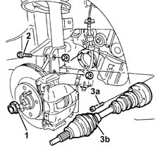
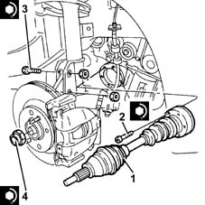
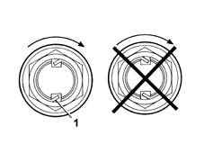

2710A10 drive shaft with joints (one), l/h or r/h - r + r
- Path
- Procedures > 27 AXLE > 2710 FRONT AXLE > 2710A drive shafts and joints > 2710A10 drive shaft with joints (one), l/h or r/h - r + r
- Kind
- repair procedure (removal / refitting; the operation number is the code)
- Applies to
- engines: 1.3 JTD; all production periods
- Interactive page
- https://sloeber94.github.io/elrnDB-lYpsln/en/#/2429135
Applies to: engines: 1.3 JTD; all production periods
 Removing
Removing
 Refitting
RefittingPosition the vehicle on the ramp.
PROCEED AS FOLLOWS FOR THE RIGHT DRIVE SHAFT.
Proceed with removal 4450B04 right front wheel r r .
Proceed with removal 7055B66 Engine compartment DUST SHIELD protection in right front wheel arch - R.R. .
Proceed with removal 7055B91 Right front WHEEL ARCH LINER - R.R. .
PROCEED AS FOLLOWS FOR THE LEFT DRIVE SHAFT
Proceed with removal 4450B02 left front wheel r r .
Proceed with removal 7055B90 Left front WHEEL ARCH LINER - R.R. .
PROCEED AS FOLLOWS FOR BOTH DRIVE SHAFTS
1. Remove the two bevels and undo the nut securing the hub nut to the drive shaft.
2. Undo the bolts fixing the front hub steering knuckle to the front shock absorber.
Release the wheel side constant velocity joint from the wheel hub.
3. Undo the bolts (3a) and remove the driveshaft, complete with joints (3b).

Applies to: engines: 1.3 JTD; all production periods
Refitting
Removing1. Refit the drive shaft complete with couplings in its seating.
2. Tighten the bolts fixing the driveshaft to the recommended torque.
 | Fastening | Component | Ø | Value (daNm) |
|---|---|---|---|---|
2 | Bolt | DRIVESHAFT | M8 |
3. Tighten the front wheel hub fastening bolts to the front shock absorbers to the recommended torque.
| Fastening | Component | Ø | Value (daNm) |
|---|---|---|---|---|
3 | Bolt | FRONT HUB STEERING KNUCKLE. | M10 | (Shock absorber side) 7.1 ÷ 7.9 |
4. Tighten a new nut fixing the front wheel hub to the driveshaft to the recommended torque using the angle tightening tool.
| Fastening | Component | Ø | Value (daNm) |
|---|---|---|---|---|
4 | Nut | FRONT HUB WITH BEARINGS | M24 |
 | Name | Country |
|---|---|---|
- | Protractor | 1.860.942.000 |

Applies to: engines: 1.3 JTD; all production periods
1. Bevel the collar of the nut in two places as shown in the figure.

Applies to: engines: 1.3 JTD; all production periods
PROCEED AS FOLLOWS FOR THE LEFT DRIVE SHAFT
Proceed with refitting 7055B90 Left front WHEEL ARCH LINER - R.R. .
Proceed with refitting 4450B02 left front wheel r r .
PROCEED AS FOLLOWS FOR THE RIGHT DRIVE SHAFT
Proceed with refitting 7055B91 Right front WHEEL ARCH LINER - R.R. .
Proceed with refitting 7055B66 Engine compartment DUST SHIELD protection in right front wheel arch - R.R. .
Proceed with refitting 4450B04 right front wheel r r .
Remove the car from the ramps.
Topics linked from this page (5)
- 4450B02 left front wheel r r
- 4450B04 right front wheel r r
- 7055B66 Engine compartment DUST SHIELD protection in right front wheel arch - R.R.
- 7055B90 Left front WHEEL ARCH LINER - R.R.
- 7055B91 Right front WHEEL ARCH LINER - R.R.